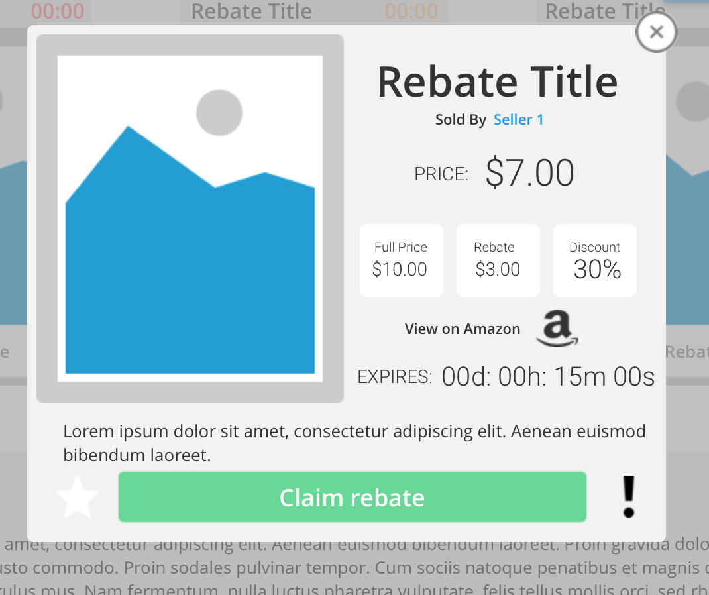

UI/UX Design
I spoke with my client to discuss an idea for an eCommerce website that focused promoting Amazon products with a rebate incentive. The timeline for this project was very tight and as a person with little tech background the requirements for the project were very vague. The main goals of my client’s site was to gain the trust of users, convert, and also have returning users. My main concerns for this project was my inexperience with rebate based commerce and also the vague description of the project which would make it difficult to pinpoint the meaning of a successful design.
I decided to take on this project since it would be my opportunity to work with the client and to build a list of requirements for the project. I would then need to apply my own skills from working in eCommerce and learn about building a trusting relationship with an interface of a site that will be completely foreign to a user.
Research and Planning
I carried out a competitive and heuristic analysis to gain an understanding of the different mental models present in different types of users of eCommerce platforms. Going through different sites, I noticed that they all had their own efficient way of organizing their information tailored to their user's goals.
Persona Creation
To gather information regarding the mental model of the target users I carried out surveys and interviews that uncover user's preferences, attitudes, and feelings towards certain features, events, and situations. The surveys consisted of questions that rated the the user's reactions and attitudes towards certain features and interactions. The interview questions consisted of open ended questions to dig deeper into the users mental model and uncover potential areas for innovation. I used the information derived from surveys and interviews to create three personas that embodied three main user goals that my design will revolve around.
Personas:
Andrea

Goals
- Find new trending items
- Look for new accessories
- Plan future outfits
- Change wardrobe with the season
Description
This user is a sporadic shopper who is in no rush. She is looking to replenishing her current stock of items and also open to trying the latest products. She often window shops and takes her time when shopping for gifts and for herself. She takes pleasure in looking through all of her choices before making her final decision. All of the marketing emails she receives are always read and marked.
Jen
Goals
- Pay the lowest price
- Find great deals
- Find complementary items that would work well together
- Buy gifts early for their friends
Description
The bargain hunter is a shopper on a mission to find the best deal she can and she does all of her research to ensure she is getting the most bang for her buck. She is constantly comparing new items she comes across to the items she has seen before. A transparent return policy is important since she does not want to waste time and money on something she might dislike
Jake
Goals
- Save time and money
- Only shops when needs something specific
- Find item as soon as possible
- Easy payment method
Description
His focus is to find the item he is looking for purchase it and then get back to doing his homework. He is very busy and has little patience for browsing through a website. This user is a fan of creating lists filling out planners and getting his tasks done. He only shops when he needs something specific and has one favorite retailer.
Design Process

My iterative design process starts with the creation a site map and user flows to ensure that all of the features of the site are accessible through the appropriate navigation. of wire frames that I occasionally test with my peers to ensure a cohesive and intuitive interface following a lean design method. My next step is to create low fidelity prototypes that bring the interactions to life and produce a minimum viable product for initial validation testing.
Prototyping
My first steps in prototyping include the creation of a site map to ensure that every feature of the interface is meaningful and allows users to access essential features of the site. Through site map creation I am able to visualize the user flow and pin point common drop off points that adversely affect the user experience. For the final unmoderated remote user testing I wanted to ensure that the interface was intuitive and allowed users to complete their goals with minimal pain points and efficiency. I compiled a list of tasks and follow up questions to ensure that the tasks were completed correctly. If the tasks were completed correctly, there would be a specific code revealed that would allow me to ensure the predicted path was taken by the user in order to complete the task.
Reflection
While the direction of this project was initially vague from the instruction of my client, I was able to pin point certain features that would increase conversion on a site that would be completely new to the user. The most important goal of this project is to create an experience that is familiar and one that will encourage users to trust the site and convert. This project taught me the importance of working with lean UX in mind since I had close deadline.Through completing this project I was able to better understand the elements of flat UI and also work with creating my own scalable pixel perfect icons.